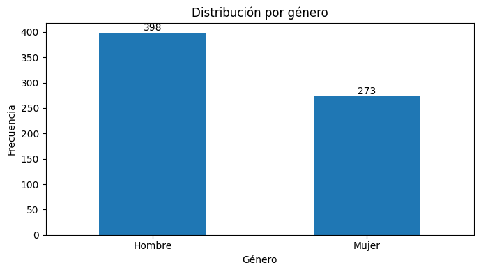
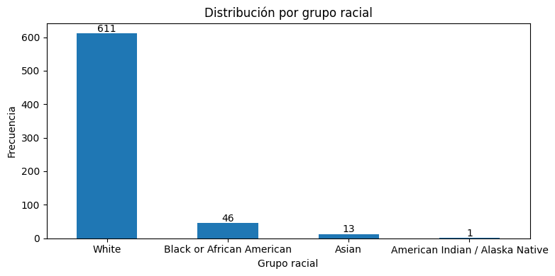
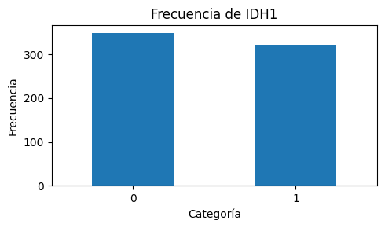

Análisis Exploratorio de Datos (EDA)#
Contexto de los datos#
El conjunto de datos utilizado para el análisis es TCGA_InfoWithGrade.csv,
correspondiente a una versión preprocesada de los datos relacionados con
gliomas del proyecto The Cancer Genome Atlas (TCGA).
# Librerias
import pandas as pd
import numpy as np
import matplotlib.pyplot as plt
# Dataset
df_mutations = pd.read_csv("dataset/TCGA_InfoWithGrade.csv")
df_mutations.head()
| Grade | Gender | Age_at_diagnosis | Race | IDH1 | TP53 | ATRX | PTEN | EGFR | CIC | ... | FUBP1 | RB1 | NOTCH1 | BCOR | CSMD3 | SMARCA4 | GRIN2A | IDH2 | FAT4 | PDGFRA | |
|---|---|---|---|---|---|---|---|---|---|---|---|---|---|---|---|---|---|---|---|---|---|
| 0 | 0 | 0 | 51.30 | 0 | 1 | 0 | 0 | 0 | 0 | 0 | ... | 1 | 0 | 0 | 0 | 0 | 0 | 0 | 0 | 0 | 0 |
| 1 | 0 | 0 | 38.72 | 0 | 1 | 0 | 0 | 0 | 0 | 1 | ... | 0 | 0 | 0 | 0 | 0 | 0 | 0 | 0 | 0 | 0 |
| 2 | 0 | 0 | 35.17 | 0 | 1 | 1 | 1 | 0 | 0 | 0 | ... | 0 | 0 | 0 | 0 | 0 | 0 | 0 | 0 | 0 | 0 |
| 3 | 0 | 1 | 32.78 | 0 | 1 | 1 | 1 | 0 | 0 | 0 | ... | 0 | 0 | 0 | 0 | 0 | 0 | 0 | 0 | 1 | 0 |
| 4 | 0 | 0 | 31.51 | 0 | 1 | 1 | 1 | 0 | 0 | 0 | ... | 0 | 0 | 0 | 0 | 0 | 0 | 0 | 0 | 0 | 0 |
5 rows × 24 columns
Variable objetivo#
Grade: indica el grado del glioma. Esta variable distingue entre los dos grupos principales presentes en el conjunto de datos:LGG(Low-Grade Glioma) yGBM(Glioblastoma Multiforme).
Variables clínicas#
Las variables clínicas proporcionan información sobre las características demográficas de los pacientes:
Gender: género del paciente.Age_at_diagnosis: edad del paciente al momento del diagnóstico.Race: raza reportada del paciente.
Variables genéticas#
El conjunto de datos también contiene variables correspondientes a diferentes genes. Estas variables están codificadas de forma binaria, indicando con un valor de 1 la presencia de una mutación en el gen correspondiente, y con un 0 la ausencia de dicha mutación.
Entre los genes incluidos se encuentran:
IDH1: codifica una enzima involucrada en el metabolismo celular.TP53: gen supresor tumoral que participa en el control del ciclo celular y en la respuesta al daño del ADN. Sus alteraciones pueden favorecer la proliferación de células tumorales.ATRX: participa en el mantenimiento de la estructura de la cromatina y en la estabilidad del genoma.PTEN: gen supresor tumoral que regula vías relacionadas con el crecimiento y la supervivencia celular.EGFR: codifica un receptor involucrado en señales de crecimiento y proliferación celular.CIC: participa en la regulación de la expresión de otros genes y en procesos relacionados con el desarrollo celular.MUC16: codifica una proteína de gran tamaño asociada a la superficie celular.PIK3CA: participa en la vía de señalización PI3K/AKT, relacionada con crecimiento, supervivencia y proliferación celular.NF1: actúa como regulador negativo de señales relacionadas con el crecimiento celular. Sus alteraciones pueden contribuir a la proliferación tumoral.PIK3R1: codifica una subunidad reguladora de la vía PI3K, que interviene en procesos de crecimiento y supervivencia celular.FUBP1: participa en la regulación de la expresión génica y del crecimiento celular.RB1: gen supresor tumoral que participa en el control del ciclo celular y regula la progresión de las células hacia la división.NOTCH1: forma parte de la vía de señalización Notch, relacionada con la diferenciación, proliferación y supervivencia celular.BCOR: participa en la regulación de la expresión génica mediante complejos relacionados con la cromatina.CSMD3: codifica una proteína de gran tamaño y se encuentra entre los genes que pueden presentar mutaciones en distintos tumores.SMARCA4: participa en la remodelación de la cromatina y, por tanto, en la regulación de la expresión de los genes.GRIN2A: codifica una subunidad de un receptor de glutamato, relacionado principalmente con la señalización neuronal.IDH2: codifica una enzima metabólica relacionada con IDH1.FAT4: participa en procesos relacionados con la organización, adhesión y crecimiento de las células.PDGFRA: codifica un receptor involucrado en señales de crecimiento y proliferación celular.
El dataset está compuesto por 24 variables de las cuales 23 son binarias mientras que Age_at_diagnosis es númerica (float64), expresando en años la edad del paciente al momento del diagnóstico, donde la parte
decimal incorpora información adicional sobre los días transcurridos.
El objetivo a resolver es predecir la severidad del glioma en pacientes, clasificándolos entre Glioma de Bajo Grado (LGG) y Glioblastoma Multiforme (GBM) a partir de sus características clínicas y perfil de mutaciones genéticas. Sin embargo, antes de entrenar modelos de clasificación supervisados y realizar la selección óptima de variables, iniciaremos con un análisis exploratorio de datos (EDA) sobre el conjunto de entrenamiento (Train set) derivado del dataset TCGA Glioma. El propósito es comprender la estructura de las variables, identificar los patrones de mutación genéticos más frecuentes, detectar valores atípicos y analizar las relaciones clave entre los biomarcadores clínicos y las alteraciones moleculares que diferencian ambos tipos de tumor.
Estructura#
info_df = pd.DataFrame({
"Tipo de dato": df_mutations.dtypes.astype(str),
"Valores no nulos": df_mutations.notna().sum().values,
"Valores nulos": df_mutations.isna().sum().values
})
info_df
| Tipo de dato | Valores no nulos | Valores nulos | |
|---|---|---|---|
| Grade | int64 | 839 | 0 |
| Gender | int64 | 839 | 0 |
| Age_at_diagnosis | float64 | 839 | 0 |
| Race | int64 | 839 | 0 |
| IDH1 | int64 | 839 | 0 |
| TP53 | int64 | 839 | 0 |
| ATRX | int64 | 839 | 0 |
| PTEN | int64 | 839 | 0 |
| EGFR | int64 | 839 | 0 |
| CIC | int64 | 839 | 0 |
| MUC16 | int64 | 839 | 0 |
| PIK3CA | int64 | 839 | 0 |
| NF1 | int64 | 839 | 0 |
| PIK3R1 | int64 | 839 | 0 |
| FUBP1 | int64 | 839 | 0 |
| RB1 | int64 | 839 | 0 |
| NOTCH1 | int64 | 839 | 0 |
| BCOR | int64 | 839 | 0 |
| CSMD3 | int64 | 839 | 0 |
| SMARCA4 | int64 | 839 | 0 |
| GRIN2A | int64 | 839 | 0 |
| IDH2 | int64 | 839 | 0 |
| FAT4 | int64 | 839 | 0 |
| PDGFRA | int64 | 839 | 0 |
El conjunto de datos presenta una estructura limpia y estructurada, compuesta por 839 registros y 24 variables, sin presencia de valores nulos o faltantes. Está conformado por una variable continua de tipo flotante correspondiente a la edad al diagnóstico (Age_at_diagnosis) y un conjunto de variables categóricas que incluyen la variable objetivo (Grade), características demográficas como género y raza, y la presencia o ausencia de mutaciones en los 20 genes analizados.
Las variables binarias, originalmente codificadas mediante valores enteros 0 y 1, fueron transformadas al tipo categórico (category) para representar adecuadamente su naturaleza y facilitar su análisis exploratorio. Esta estructura tabular compacta permite realizar de manera eficiente el análisis exploratorio de datos, la visualización de patrones y las posteriores etapas de ingeniería de características y modelado predictivo.
# Conversión de columnas categóricas a tipo "category"
columnas_categoricas = df_mutations.columns.difference(["Age_at_diagnosis"])
df_mutations[columnas_categoricas] = df_mutations[columnas_categoricas].astype("category")
pd.DataFrame({
"Tipo": df_mutations.dtypes.astype(str)
}).T
| Grade | Gender | Age_at_diagnosis | Race | IDH1 | TP53 | ATRX | PTEN | EGFR | CIC | ... | FUBP1 | RB1 | NOTCH1 | BCOR | CSMD3 | SMARCA4 | GRIN2A | IDH2 | FAT4 | PDGFRA | |
|---|---|---|---|---|---|---|---|---|---|---|---|---|---|---|---|---|---|---|---|---|---|
| Tipo | category | category | float64 | category | category | category | category | category | category | category | ... | category | category | category | category | category | category | category | category | category | category |
1 rows × 24 columns
Missing data#
A continuación se revisan los valores faltantes y las principales estadísticas descriptivas del conjunto de datos.
print("Valores faltantes:")
display(df_mutations.isnull().sum().sum())
Valores faltantes:
0
El conjunto de datos no presenta datos faltantes.
División del dataset#
import matplotlib.pyplot as plt
import seaborn as sns
import warnings
warnings.simplefilter(action="ignore", category=FutureWarning)
conteo = df_mutations['Grade'].value_counts()
proporcion = df_mutations['Grade'].value_counts(normalize=True) * 100
plt.figure(figsize=(6, 4))
ax = sns.countplot(data=df_mutations, x='Grade', palette=['#2b5c8f', '#d95f02'])
plt.title('Distribución Global de Tipos de Glioma (Target)')
plt.xlabel('Clase (0 = LGG, 1 = GBM)')
plt.ylabel('Cantidad de Pacientes')
plt.xticks(ticks=[0, 1], labels=['LGG (58.05%)', 'GBM (41.95%)'])
for p in ax.patches:
ax.annotate(f'{int(p.get_height())}',
(p.get_x() + p.get_width() / 2., p.get_height()),
ha='center', va='center', xytext=(0, 5),
textcoords='offset points')
plt.tight_layout()
plt.show()

La elección de una partición estratificada (Stratified Train-Test Split) se justifica por la necesidad de preservar la proporción original de las clases de la variable objetivo (Grade) en ambos subconjuntos de datos. En el dataset completo, la distribución presenta un ligero desbalance, donde el 58.05% corresponde a Gliomas de Bajo Grado (LGG) y el 41.95% a Glioblastomas (GBM), una división sin estratificar podría dejar los conjuntos de train y test sesgados a un solo grupo de la variable Grade.
from sklearn.model_selection import train_test_split
x = df_mutations.drop(columns=['Grade'])
y = df_mutations['Grade']
X_train, X_test, y_train, y_test = train_test_split(
x,
y,
test_size=0.20,
random_state=42,
stratify=y
)
train_data = pd.concat([X_train, y_train], axis=1)
Para asegurar una evaluación rigurosa del modelo y prevenir la fuga de datos, el conjunto original de 839 registros se dividió en una proporción 80/20 mediante una partición estratificada basada en la variable objetivo (Grade). De este modo, se reservó un conjunto de prueba (Test set) compuesto por 168 pacientes exclusivamente para la validación final del rendimiento, mientras que las 671 observaciones restantes formaron el conjunto de entrenamiento (Train set), garantizando que el patrón de distribución de las clases —aproximadamente 58% para tumores de bajo grado (LGG) y 42% para glioblastomas (GBM)— se mantuviera perfectamente balanceado entre ambas subdivisiones.
Análisis Univariado de variables#
Análisis de la variable Grade (Target)#
Resumen estadístico de la variable objetivo:
Análisis de variables cuantitativas:#
Resumen estadístico de la variable Age_at_diagnosis:
Análisis de variables cualitativas:#
Para las variables categóricas se analizaron las frecuencias absolutas y relativas de cada una de sus categorías. Las siguientes tablas presentan la distribución de frecuencias y porcentajes para cada variable, permitiendo identificar de forma clara la proporción de las diferentes categorías presentes en el conjunto de datos.
Gender#
La distribución por género muestra un ligero predominio de hombres, correspondientes a la categoría 0, con 398 registros (59,31 %). Por su parte, las mujeres, representadas por la categoría 1, corresponden a 273 registros (40,69 %).
import matplotlib.pyplot as plt
# Tabla
tabla_gender = (
train_data["Gender"]
.value_counts()
.rename_axis("Género")
.reset_index(name="Frecuencia")
)
tabla_gender["Porcentaje"] = (
tabla_gender["Frecuencia"] /
tabla_gender["Frecuencia"].sum() * 100
).round(2)
tabla_gender["Género"] = tabla_gender["Género"].map({
0: "Hombre",
1: "Mujer"
})
# Gráfico
frecuencias_gender = (
train_data["Gender"]
.value_counts()
.sort_index()
)
frecuencias_gender.index = ["Hombre", "Mujer"]
plt.figure(figsize=(7, 4))
ax = frecuencias_gender.plot(kind="bar")
plt.title("Distribución por género")
plt.xlabel("Género")
plt.ylabel("Frecuencia")
plt.xticks(rotation=0)
for i, valor in enumerate(frecuencias_gender):
ax.text(
i,
valor + 5,
str(valor),
ha="center"
)
plt.tight_layout()
plt.show()
tabla_gender

| Género | Frecuencia | Porcentaje | |
|---|---|---|---|
| 0 | Hombre | 398 | 59.31 |
| 1 | Mujer | 273 | 40.69 |
Race#
En cuanto a la variable Race, se observa una marcada concentración de los registros en la categoría White, que representa 611 casos (91,06 %) del conjunto analizado. La categoría Black or African American cuenta con 46 registros (6,86 %), mientras que Asian representa 13 casos (1,94 %). Finalmente, American Indian or Alaska Native presenta únicamente 1 registro (0,15 %).
La distribución evidencia un fuerte desbalance en la variable racial, dado que la categoría de personas de raza blanca concentra más de nueve de cada diez observaciones. Por tanto, las categorías minoritarias tienen una representación considerablemente menor dentro del conjunto de datos.
# Tabla
tabla_race = (
train_data["Race"]
.value_counts()
.rename_axis("Grupo racial")
.reset_index(name="Frecuencia")
)
tabla_race["Porcentaje"] = (
tabla_race["Frecuencia"] /
tabla_race["Frecuencia"].sum() * 100
).round(2)
tabla_race["Grupo racial"] = tabla_race["Grupo racial"].map({
0: "White",
1: "Black or African American",
2: "Asian",
3: "American Indian or Alaska Native"
})
# Gráfico
frecuencias_race = (
train_data["Race"]
.value_counts()
.sort_index()
)
frecuencias_race.index = [
"White",
"Black or African American",
"Asian",
"American Indian / Alaska Native"
]
plt.figure(figsize=(8, 4))
ax = frecuencias_race.plot(kind="bar")
plt.title("Distribución por grupo racial")
plt.xlabel("Grupo racial")
plt.ylabel("Frecuencia")
plt.xticks(rotation=0)
for i, valor in enumerate(frecuencias_race):
ax.text(
i,
valor + 5,
str(valor),
ha="center"
)
plt.tight_layout()
plt.show()
tabla_race

| Grupo racial | Frecuencia | Porcentaje | |
|---|---|---|---|
| 0 | White | 611 | 91.06 |
| 1 | Black or African American | 46 | 6.86 |
| 2 | Asian | 13 | 1.94 |
| 3 | American Indian or Alaska Native | 1 | 0.15 |
Variables genéticas#
Las variables genéticas presentan una distribución predominantemente concentrada en la categoría 0, correspondiente a la ausencia de mutación, mientras que la categoría 1 representa su presencia.
Entre los genes analizados, IDH1 presenta la mayor proporción de casos con mutación, con 322 registros (47,99 %), seguido de TP53, con 270 registros (40,24 %). A continuación se encuentran ATRX con 25,63 %, PTEN con 16,84 %, CIC con 13,71 %, EGFR con 11,62 % y MUC16 con 11,03 %. En un nivel intermedio se encuentran PIK3CA (8,49 %), NF1 (8,35 %) y FUBP1 (6,26 %), mientras que PIK3R1 (5,81 %), RB1 (4,92 %) y NOTCH1 (4,92 %) presentan proporciones inferiores al 6 %. Finalmente, genes como CSMD3 (3,43 %), SMARCA4 (3,43 %), IDH2 (3,13 %), BCOR (3,28 %), GRIN2A (2,83 %), FAT4 (2,68 %) y PDGFRA (2,68 %) muestran una presencia de mutaciones relativamente baja en el conjunto analizado. En términos generales, se observa una alta variabilidad en la frecuencia de las mutaciones entre los genes, con una mayor concentración en IDH1 y TP53 y una presencia considerablemente menor en los genes restantes. Esto evidencia que las alteraciones genéticas no se distribuyen de manera uniforme en la muestra y que algunos genes presentan una representación mutacional mucho mayor que otros.
variables_categoricas = train_data.select_dtypes(
include=["category"]
).columns.drop(["Grade", "Gender", "Race"])
bloques = []
for variable in variables_categoricas:
# Tabla de frecuencias
tabla = (
train_data[variable]
.value_counts(dropna=False)
.rename_axis("Categoría")
.reset_index(name="Frecuencia")
)
tabla["Porcentaje"] = (
tabla["Frecuencia"] / tabla["Frecuencia"].sum() * 100
).round(2)
html_tabla = tabla.to_html(
index=False,
classes="tabla-categorica"
)
# Gráfico de barras
frecuencias = train_data[variable].value_counts(dropna=False)
fig, ax = plt.subplots(figsize=(5, 3))
frecuencias.plot(
kind="bar",
ax=ax
)
ax.set_title(f"Frecuencia de {variable}")
ax.set_xlabel("Categoría")
ax.set_ylabel("Frecuencia")
ax.tick_params(axis="x", rotation=0)
plt.tight_layout()
buffer = io.BytesIO()
fig.savefig(
buffer,
format="png",
dpi=120,
bbox_inches="tight"
)
plt.close(fig)
imagen_base64 = base64.b64encode(
buffer.getvalue()
).decode()
bloque = f"""
<div style="
padding: 15px;
border-radius: 8px;
margin-bottom: 20px;
">
<h4 style="margin-bottom: 10px;">
{variable}
</h4>
<!-- FILA: TABLA -->
<div style="
margin-bottom: 15px;
">
{html_tabla}
</div>
<!-- FILA: GRÁFICO -->
<div style="
text-align: center;
">
<img
src="data:image/png;base64,{imagen_base64}"
style="max-width: 100%;"
>
</div>
</div>
"""
bloques.append(bloque)
html_final = f"""
<div style="
display: grid;
grid-template-columns: repeat(2, 1fr);
gap: 30px;
margin-top: 20px;
">
{''.join(bloques)}
</div>
"""
display(HTML(html_final))
---------------------------------------------------------------------------
NameError Traceback (most recent call last)
Cell In[9], line 43
39 ax.tick_params(axis="x", rotation=0)
41 plt.tight_layout()
---> 43 buffer = io.BytesIO()
44 fig.savefig(
45 buffer,
46 format="png",
47 dpi=120,
48 bbox_inches="tight"
49 )
50 plt.close(fig)
NameError: name 'io' is not defined

There is a lot more that you can do with outputs (such as including interactive outputs) with your book. For more information about this, see the Jupyter Book documentation